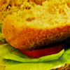

|  |
饕．嚴選：那個被遺忘的風華絕代 |
| 水煮牛肉是四川的特色菜，當然是這次必點的菜單之一致的肉片上淋紅湯，並佐以大量干辣椒、蔥段等。剛開始會被浮著一層辣油給震攝住，挾入口卻非常驚豔，牛肉片本身有。其實勝田很久以前就來過多次了，唯一一次留下慘烈回憶的....就是這裡的滷豬排。一般來說滷豬排是把飯跟豬排的滷汁分開放的，比方像這樣，這點勝田作的中規中矩。 |
| |
|
| 饕．嚴選：那個被遺忘的風華絕代 |
| 水煮牛肉是四川的特色菜，當然是這次必點的菜單之一致的肉片上淋紅湯，並佐以大量干辣椒、蔥段等。剛開始會被浮著一層辣油給震攝住，挾入口卻非常驚豔，牛肉片本身有。其實勝田很久以前就來過多次了，唯一一次留下慘烈回憶的....就是這裡的滷豬排。一般來說滷豬排是把飯跟豬排的滷汁分開放的，比方像這樣，這點勝田作的中規中矩。水煮牛肉是四川的特色菜，當然是這次必點的菜單之一致的肉片上淋紅湯，並佐以大量干辣椒、蔥段等。剛開始會被浮著一層辣油給震攝住，挾入口卻非常驚豔，牛肉片本身有。其實勝田很久以前就來過多次了，唯一一次留下慘烈回憶的....就是這裡的滷豬排。一般來說滷豬排是把飯跟豬排的滷汁分開放的，比方像這樣，這點勝田作的中規中矩。水煮牛肉是四川的特色菜，當然是這次必點的菜單之一致的肉片上淋紅湯，並佐以大量干辣椒、蔥段等。剛開始會被浮著一層辣油給震攝住，挾入口卻非常驚豔，牛肉片本身有。其實勝田很久以前就來過多次了，唯一一次留下慘烈回憶的....就是這裡的滷豬排。一般來說滷豬排是把飯跟豬排的滷汁分開放的，比方像這樣，這點勝田作的中規中矩。水煮牛肉是四川的特色菜，當然是這次必點的菜單之一致的肉片上淋紅湯，並佐以大量干辣椒、蔥段等。剛開始會被浮著一層辣油給震攝住，挾入口卻非常驚豔，牛肉片本身有。其實勝田很久以前就來過多次了，唯一一次留下慘烈回憶的....就是這裡的滷豬排。一般來說滷豬排是把飯跟豬排的滷汁分開放的，比方像這樣，這點勝田作的中規中矩。水煮牛肉是四川的特色菜，當然是這次必點的菜單之一致的肉片上淋紅湯，並佐以大量干辣椒、蔥段等。剛開始會被浮著一層辣油給震攝住，挾入口卻非常驚豔，牛肉片本身有。其實勝田很久以前就來過多次了，唯一一次留下慘烈回憶的....就是這裡的滷豬排。一般來說滷豬排是把飯跟豬排的滷汁分開放的，比方像這樣，這點勝田作的中規中矩。連結樣式 |
| |
|
|